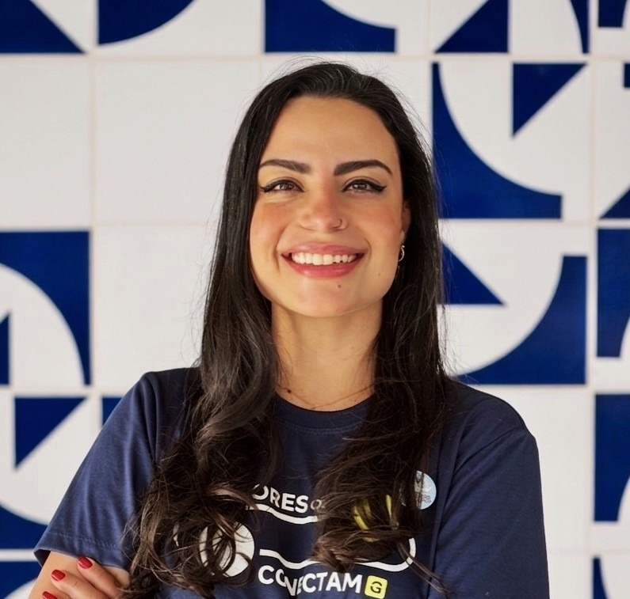
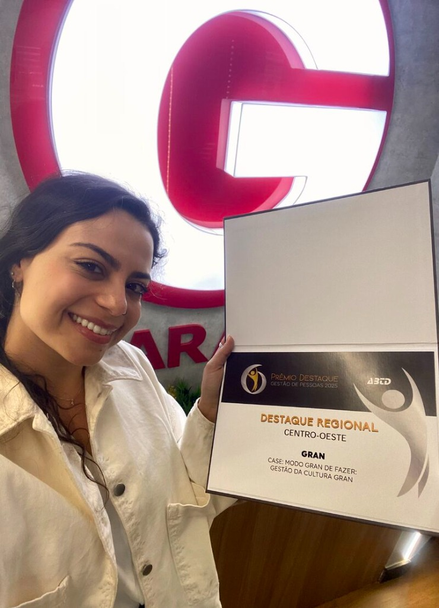
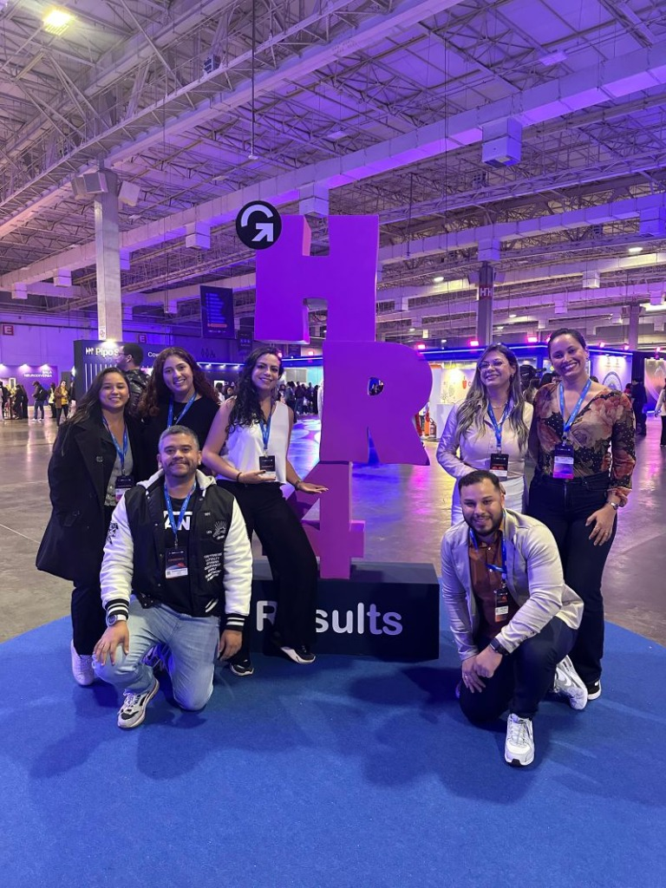
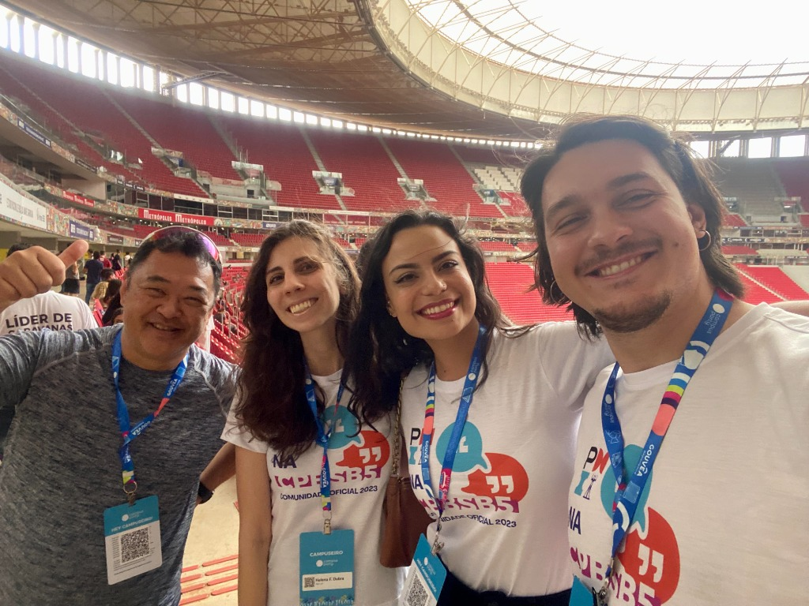

Administradora pela UnB, MBA em Ciências Comportamentais e Tecnólogo em IA em andamento. Conecto comportamento humano, gestão e automação para gerar resultados reais.

Exemplos práticos de prompts estruturados, orquestração de agentes e automações integradas que utilizei no ambiente corporativo.
Programa de Reconhecimento de Iniciativas de Impacto e Inovação do Gran — 5 projetos premiados em 2025.



Sou Administradora pela UnB, com MBA em Ciências Comportamentais e Tecnólogo em Inteligência Artificial em andamento. Conecto visão de negócio, comportamento humano e tecnologia.
Comecei em Empresa Júnior na UnB (AD&M), passei por estágio no Senado Federal, startups de HRTech (ImpulseUp), mercado (Wiz Co) e EdTech (Gran), sempre com foco em construir soluções que geram eficiência e escala operacional.
Vivi um semestre na Espanha como bolsista — experiência que moldou minha visão de mundo e minha capacidade de me adaptar a novos ambientes.
Aberta a conversas sobre projetos, estágios e oportunidades na interseção entre People, Dados e IA.